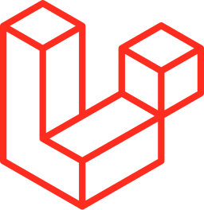
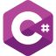
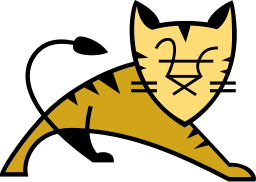
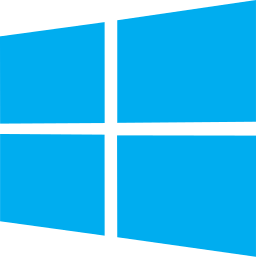

Windows 98 Interactive Portfolio
Réplica interactiva del escritorio de Windows 98 con gestor de ventanas propio en Vanilla JS (ES Modules), soporte táctil, barra de tareas dinámica y 98.css.
Réplica interactiva del escritorio de Windows 98 con gestor de ventanas propio en Vanilla JS (ES Modules), soporte táctil, barra de tareas dinámica y 98.css.
Desarrollo, mantenimiento e integración de servicios Back-End, bases de datos relacionales y APIs RESTful para gestión institucional y científica.
Aplicaciones web completas integrando motores de base de datos, autenticación, paneles administrativos y arquitecturas MVC modernas.
Desarrollo y arquitectura de servicios Back-End, optimización de consultas en bases de datos y diseño de APIs para plataformas internas y sistemas de gestión.
Desarrollo Full-Stack de aplicaciones corporativas, implementación de interfaces web y mantenimiento evolutivo de servicios de negocio.
Formación universitaria integral en ingeniería de software, programación orientada a objetos, bases de datos, arquitectura web y redes.
Educación secundaria completa.

Laravel
C#
Tomcat GitLab
GitLab

WindowsWhat do you want the computer to do?
It's now safe to turn off your computer.
(Hacé clic en cualquier lugar o presioná una tecla para volver a Windows 98)